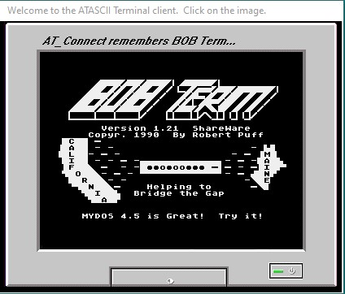

Getting Started

The AT_Connect distribution package may have come as a ZIP file, a self-extracting ZIP file, a 7ZIP file or an RAR archive. After decompressing the archive or running the self-extracting ZIPchive, run the Setup.exe program to install AT_Connect on your Windows PC. AT_Connect installation will NOT create an icon on your desktop. You will have to run it from the 'Start-> All Programs' list in Windows XP or manually create the desktop icon if you want one. AT_Connect, by default, sets itself up in your 'C:\Program Files x86' folder and keeps its data in your Documents folder.
After installation, if you decide to move AT_Connect to different folders on your drive, the uninstall program may no longer function properly so it is recommended that you decide on where you want your program folder to be and choose it at installation time during the setup program.
AT_Connect will automatically create its system folder in your "Documents" folder. Everything important like your configuration file and your BBS List file will be installed there. Since this folder is not created by the setup program, it will not be deleted when the program is uninstalled so you won't lose your configuration or BBS List if you upgrade AT_Connect to a newer version. You should always uninstall AT_Connect before installing a new version.
When you run AT_Connect for the very first time, it will create its configuration file, some sub-directories, and the BBS list containing one BBS entry. This entry is for my BBS - Boot Factory. You may immediately choose this BBS and hit the 'Connect' button to start the AT_Connect experience. For best results, using BaudSim mode is recommended to experience what BBS'ing and serial communication was really like. BaudSim will be ON by default when you connect to my BBS unless you change this in the BBS Editor.
On the initial run after installation, AT_Connect will ask you if you want to load this Help File before taking you to the program. Hit 'Exit' at the top left of this form to continue with AT_Connect.
When AT_Connect initially loads, it displays the splash screen you see to the right here. Clicking on the 'BobTerm' image will continuing loading the program and bring you to the 'main screen' shown above. At this point, you may use the toolbar and control panel to operate the program. Select a BBS from the drop-down list box and click the ;Connect' button to connect to the BBS. Sit back and interface...
When you are ready to add more BBSes to your list, hit the  toolbar button to load the BBS Editor.
toolbar button to load the BBS Editor.
If you want to capture your online sessions, turn on the Capture Buffer by Right-Clicking on the terminal screen and selecting the 'Capture On' option in the sub-menu.